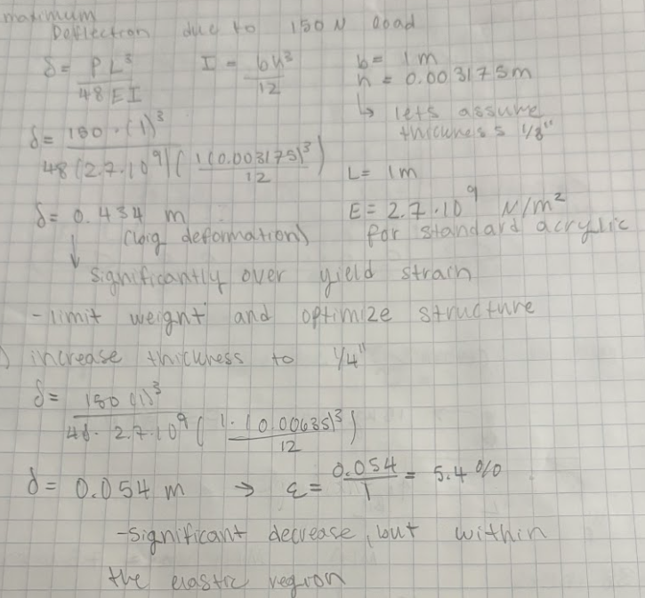
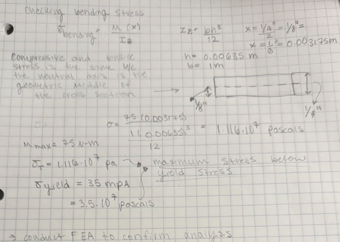
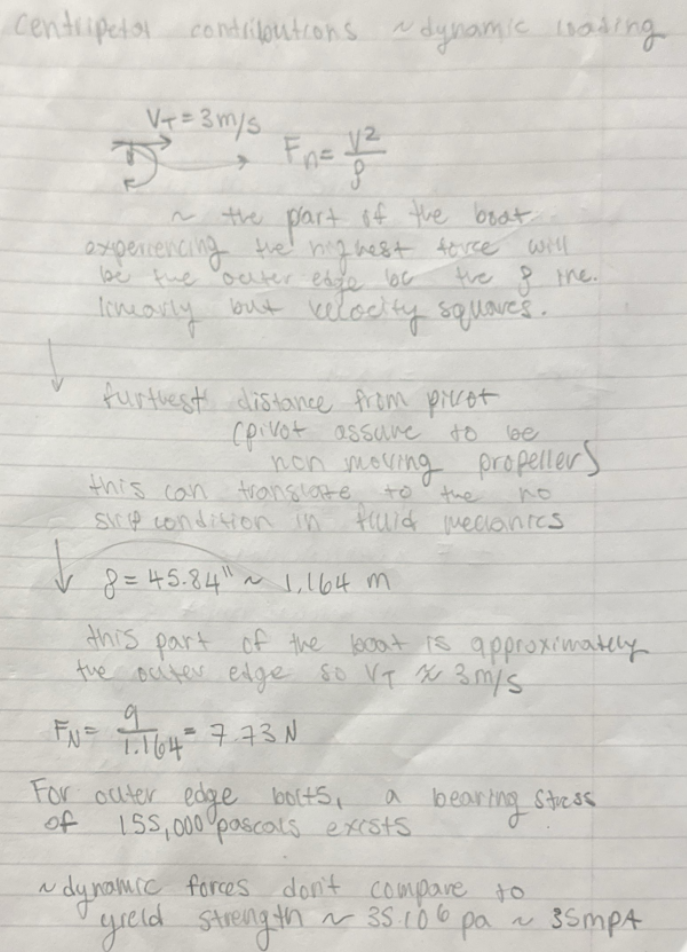
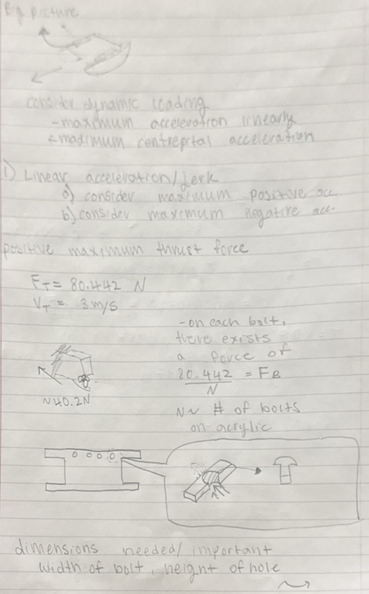
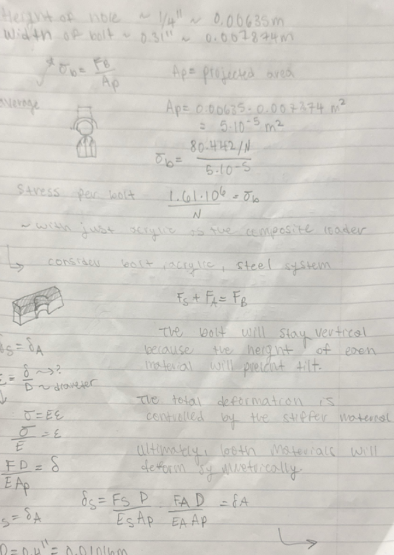
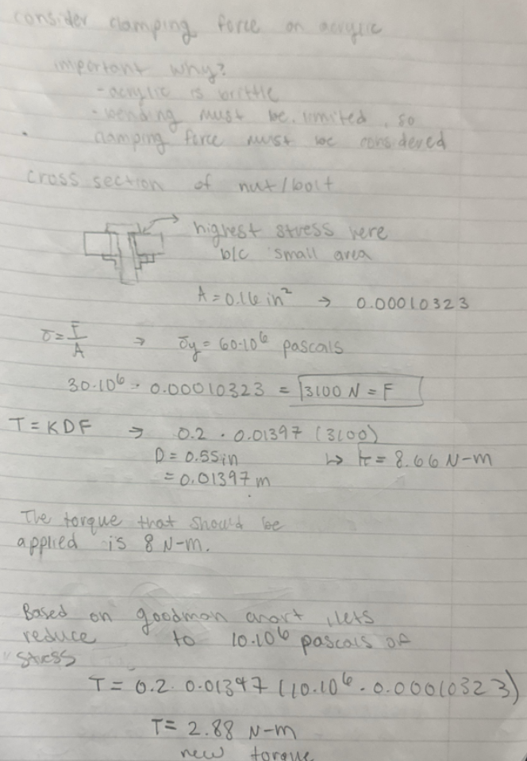
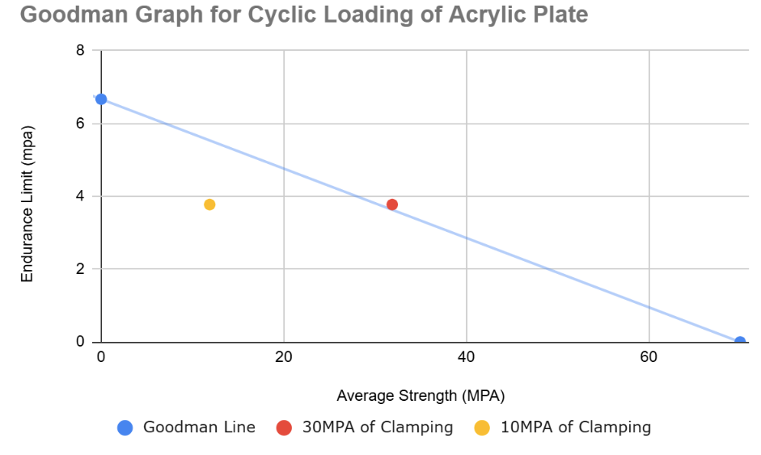
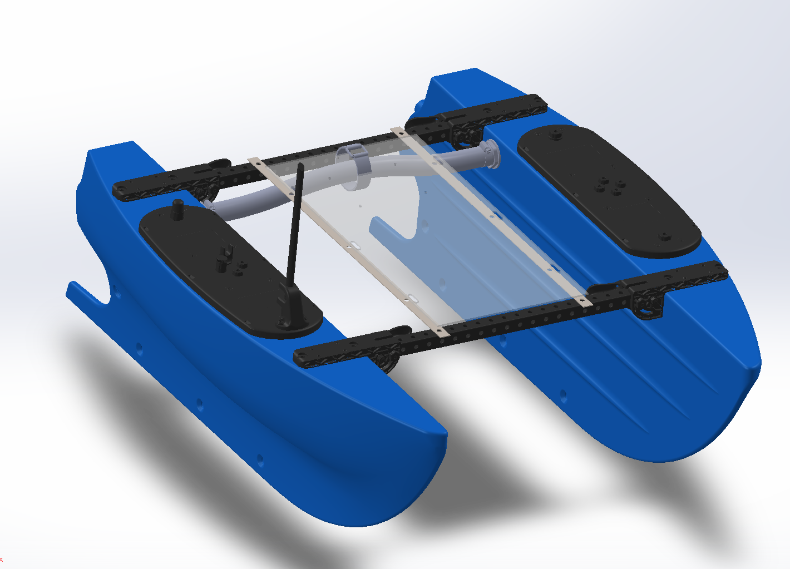
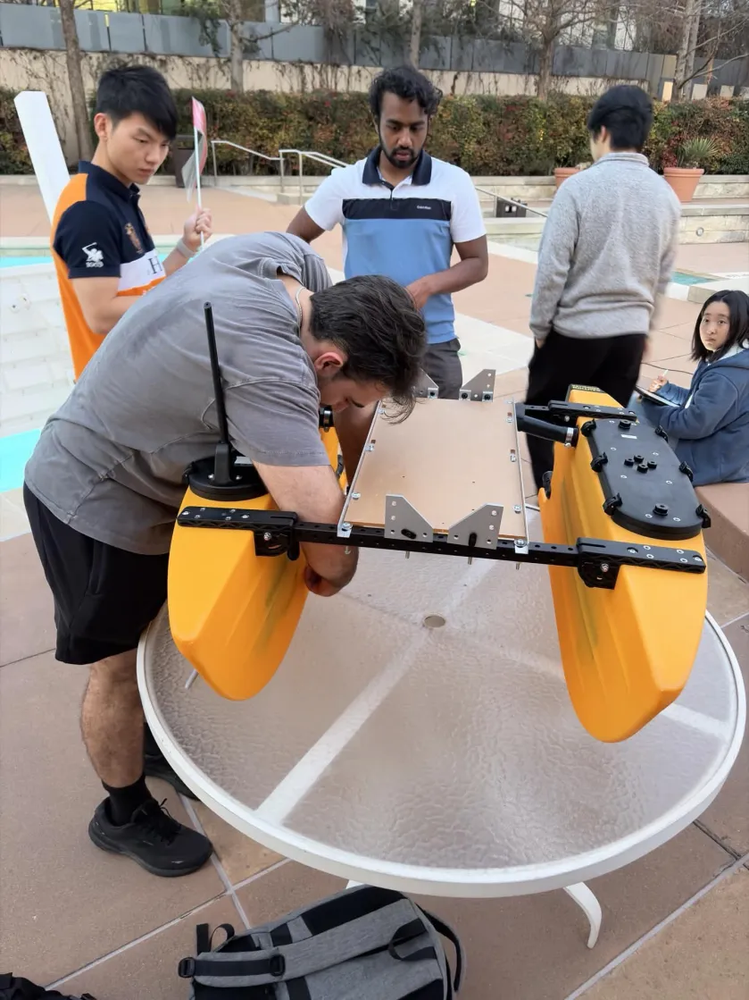

Acrylic Sensor Mount:
Fatigue & Failure Analysis
Designing an electronics baseplate for an autonomous surface vessel under cost, geometry, and environmental constraints.
Problem & Material Selection
Design Constraints
The TMR ASV needed a baseplate to place critical sensors that are exposed to static sensor loads, dynamic wave-induced acceleration, and centripetal forces during high-speed turns. The design had to be manufacturable at Texas Inventionworks (TIW) using simple geometry and remain low-cost.
Why Acrylic (PMMA)?
Three materials were considered: wood, 3D-printed polymer, and acrylic. Wood was eliminated due to moisture sensitivity and anisotropic, unpredictable behavior. 3D-printed polymer was ruled out for the same anisotropy reasons. PMMA was selected because it is isotropic, has well-documented fatigue properties, and its elastic modulus and tensile strength are consistent across stock making analysis relatively simple. ¼″ stock was chosen to maximize bending stiffness while keeping the profile low.
Analytical Workflow — First Principles to Specification
Each load case was derived independently before being combined. The sequence below shows the full analytical chain from environmental inputs to finalized mechanical specs.






Goodman Criterion & Iterative Model
Why Goodman?
The baseplate experiences a non-zero mean stress from static sensor weight, with alternating stress from wave-induced dynamics. This is precisely the combined loading case the Goodman criterion addresses. We plot mean stress on the x-axis and alternating stress on the y-axis against the material's ultimate tensile strength and endurance limit.
Operating below the Goodman line somewhat guarantees infinite fatigue life under the applied load cycle. I built an iterative Google Sheets model to sweep plate thickness and check the Goodman condition at each increment. This allows rapid what-if analysis before committing to FEA.
View Spreadsheet Model →
FEA Verification & Prototyping
Stress Concentrations | Beyond Hand Calc
Hand calculations assume nominal stress distributions. FEA was used to capture stress concentrations (Kt) at bolt holes and geometric discontinuities. These are locations where local stress can exceed the nominal value by a factor the Goodman analysis alone wouldn't catch.
The FEA heatmap confirmed that peak stresses occurred at the bolt interface, validating the decision to add aluminum reinforcement bars at that joint in the first prototype. Both analytical and FEA results agreed on the governing failure location.



Next Iteration: Fracture Mechanics
Goodman defines the safe operating envelope, but it doesn't tell you what happens when a crack initiates at a stress concentration. The next analytical layer is Linear Elastic Fracture Mechanics (LEFM) using specifically the Paris Law (da/dN = C·ΔKm), which characterizes crack growth rate as a function of stress intensity factor range.
This would allow us to set a maintenance interval based on crack propagation rate. This helps us transition from "will it fail?" to "when does it need inspection?"